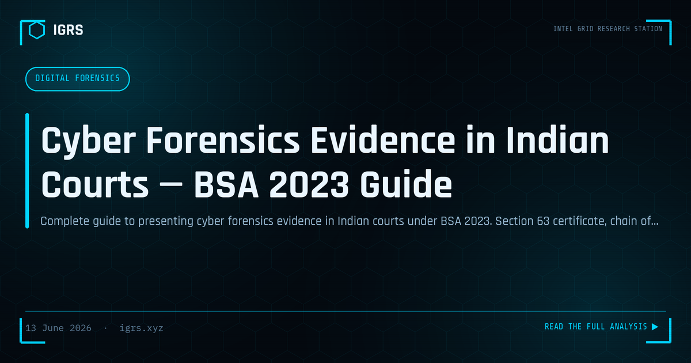

Cyber Forensics Evidence in Indian Courts — BSA 2023 Guide
The admissibility of digital evidence in Indian courts has fundamentally changed with the Bharatiya Sakshya Adhiniyam (BSA) 2023. Investigators must understand the new requirements to ensure their digital evidence is accepted by courts and withstands cross-examination.
BSA 2023 vs Indian Evidence Act 1872
| Aspect | IEA 1872 (old) | BSA 2023 (new) |
|---|---|---|
| Electronic records section | Section 65B | Section 63 |
| Certificate requirement | Mandatory (Arjun Panditrao) | Mandatory |
| Oral evidence for e-records | Not permitted | Not permitted |
| Hash value requirement | Implied | Explicit |
Section 63 BSA Certificate Requirements
The certificate must state:
- The electronic record was produced by a computer
- The computer was used regularly in the course of activities
- The computer was functioning properly (or if malfunction, did not affect the record)
- The information was derived from information fed into the computer
- Hash value of the electronic record
- Signature of person in charge of the computer/system
Who Can Sign Section 63 Certificate
- Person in charge of the device (system administrator, IT head)
- For bank records: bank's IT officer or designated officer
- For telecom records: telecom company's technical officer
- For social media: platform's India representative
- For seized devices: forensic examiner who extracted the data
Chain of Custody Documentation
- Seizure memo with device details (make, model, IMEI/serial number)
- Hash value computed at time of seizure (SHA-256)
- Evidence bag seal with investigator signature and date
- Forensic examination report
- Comparison of hash at examination with hash at seizure
Expert Witness Requirements
Digital forensics experts presenting evidence must demonstrate: relevant qualifications (degree, certification like CHFI/GCFE), tools used and their validation, methodology followed, and that examination was conducted on a forensic copy (not original).
Frequently Asked Questions
What is Section 63 BSA certificate for digital evidence?
Section 63 of Bharatiya Sakshya Adhiniyam 2023 requires a certificate accompanying electronic evidence, signed by the person in charge of the computer system. It must include the hash value of the record and certify the system was functioning properly.
Is SHA-256 hash required for digital evidence in India?
Yes, hash values (SHA-256 is the standard) are explicitly required under BSA 2023 Section 63 for electronic evidence admissibility. Hash values prove the evidence has not been tampered with since collection.
What is chain of custody for digital evidence in India?
Chain of custody documents every person who handled digital evidence — from seizure to court. It includes seizure memo, evidence bag sealing, forensic examination log, and hash verification at each stage. Gaps in chain of custody can result in evidence rejection.